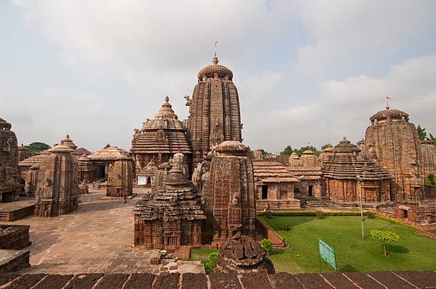
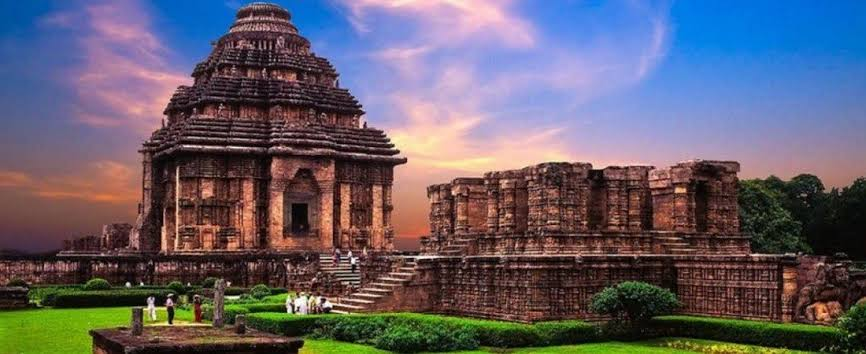
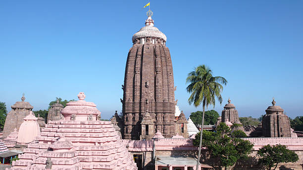
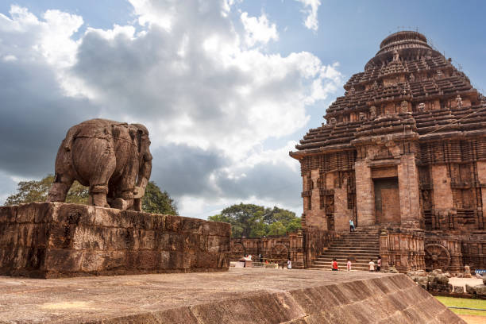
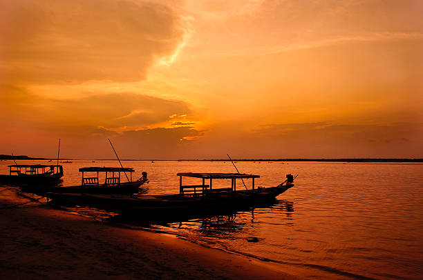
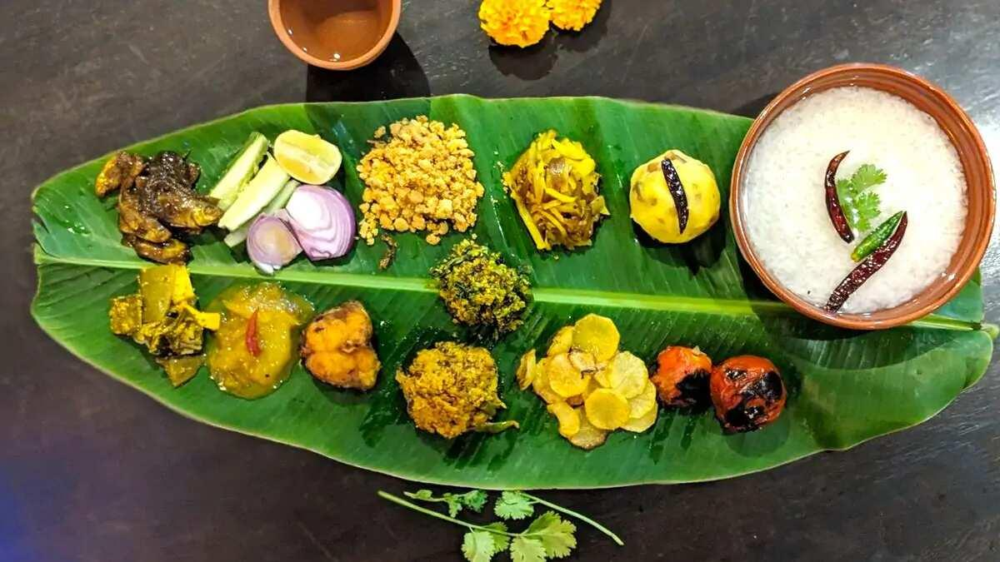

01
Bhubaneswar
The Temple City of India — famous for 11th-century Lingaraj Temple, Mukteshvara Temple, Udayagiri-Khandagiri caves, and Odia crafts.

Discover ancient stone temples, golden Bay of Bengal coastlines, sacred Rath Yatra traditions, Odissi classical dance, and timeless artisanal heritage.
Explore Odisha ↓Odisha is a culturally profound state on India's eastern coast, celebrated for its unique Kalinga temple architecture, sacred Jagannath culture, and classical dance forms.
From the holy shores of Puri and the architectural wheel chariot of Konark Sun Temple to the temple-studded city of Bhubaneswar and Asia's largest brackish lagoon at Chilika, Odisha offers a deeply spiritual and scenic journey.
Iconic temples, UNESCO monuments, and natural coastal wonders of Odisha.

The Temple City of India — famous for 11th-century Lingaraj Temple, Mukteshvara Temple, Udayagiri-Khandagiri caves, and Odia crafts.

One of the sacred Char Dhams — famous for Shree Jagannath Temple, the grand annual Rath Yatra, and golden sandy beaches.

Home of the 13th-century Sun Temple — a UNESCO World Heritage monument shaped like a colossal stone chariot of the Sun God.

Asia's largest coastal lagoon — home to endangered Irrawaddy dolphins, migratory flamingo winter colonies, and Kalijai temple island.
Odia cuisine focuses on subtle, aromatic spice blends, cold pressed mustard oil, slow earthen pot cooking, and legendary cottage cheese (chhena) confections.

One of India's oldest temple dance disciplines, distinguished by the graceful Tribhanga posture, mudras, and lyrical storytelling.
The grand chariot festival drawing millions of devotees worldwide as Lord Jagannath travels through the Grand Road of Puri.
Intricate mythological cloth-scroll paintings and palm-leaf engravings preserved by artisans in the heritage village of Raghurajpur.
Centuries-old Cuttack artisan craft shaping delicate silver wires into intricate jewelry, temple crowns, and artifacts.
Discover all 28 states, local food specialties, and centuries of living traditions.
← Back to All States